Introducción
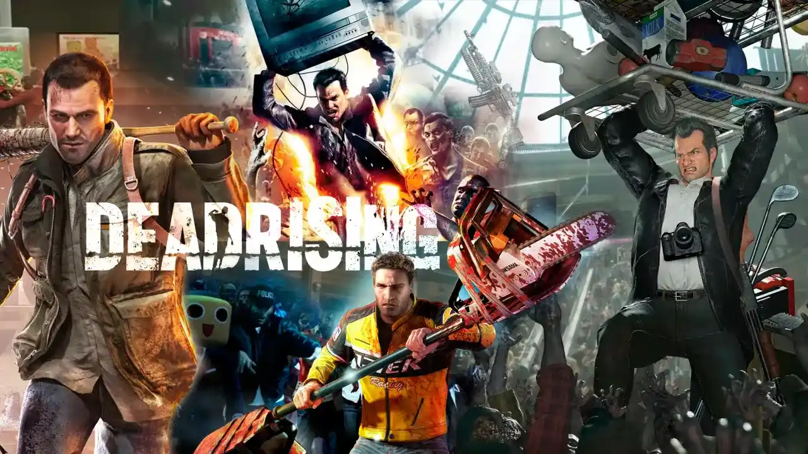
Dead Rising es una saga de acción y supervivencia con una identidad muy marcada: hordas enormes de zombis, centros comerciales, rescates imposibles y protagonistas atrapados en brotes que parecen no tener fin.
La historia sigue a personajes como Frank West, Chuck Greene y Nick Ramos, todos arrastrados a diferentes ciudades, instalaciones y zonas de cuarentena donde los brotes zombis se vuelven cada vez más graves.
Aunque tiene momentos serios y oscuros, Dead Rising también mezcla sátira, caos y exageración, lo que la convierte en una saga muy distinta dentro del género zombi.
Orden cronológico de Dead Rising
- Dead Rising
- Dead Rising 2: Case Zero
- Dead Rising 2
- Dead Rising 2: Case West
- Dead Rising 3
- Dead Rising 4
Dead Rising 2: Off the Record es una línea temporal alternativa y no forma parte de la continuidad principal de la saga.
La infección zombi en Dead Rising
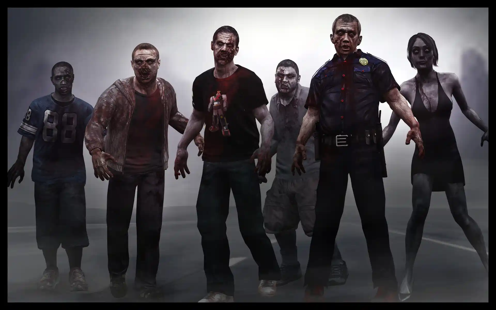
La saga se basa en brotes zombis provocados por experimentos, corporaciones, armas biológicas y encubrimientos gubernamentales. Cada juego presenta una variante distinta del desastre, pero todos comparten la misma idea: una infección descontrolada que convierte ciudades enteras en zonas de cuarentena.
Lo más llamativo de Dead Rising es que no se centra solo en sobrevivir, sino también en investigar quién está detrás del brote y cómo las corporaciones intentan manipular la verdad.
Importancia de la saga
Dead Rising se hizo muy conocida por su gran cantidad de zombis en pantalla, su sistema de armas improvisadas y sus protagonistas carismáticos. A diferencia de otras sagas de terror, aquí el caos también se mezcla con humor negro, acción y situaciones absurdas.
Esto hace que la franquicia tenga una identidad muy fuerte y reconocible dentro de los videojuegos de zombis.
Conclusión
Dead Rising es una saga que combina supervivencia, investigación, brotes biológicos y una sensación constante de caos. Cada entrega amplía el universo con nuevos protagonistas, nuevas ciudades afectadas y nuevas formas de desastre.
La cronología completa permite entender mejor cómo evoluciona el mundo de Dead Rising y cómo cada brote está conectado con los demás.
Dead Rising – Historia completa
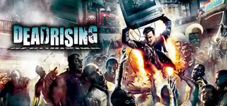
Dead Rising arranca con uno de los brotes zombis más recordados de la saga porque combina caos, aislamiento y una sensación constante de urgencia. La historia sigue a Frank West, un fotoperiodista que viaja hasta la ciudad de Willamette, Colorado, después de recibir información extraña sobre disturbios y un posible incidente a gran escala. Lo que parecía una cobertura más termina convirtiéndose en una pesadilla total cuando descubre que la ciudad ha sido sellada y está completamente tomada por hordas de zombis.
Desde el principio el juego deja claro que Willamette no es simplemente una ciudad invadida por muertos vivientes. Hay un encubrimiento detrás de todo, una operación militar, civiles atrapados dentro del centro comercial y una verdad mucho más sucia escondida en los sótanos del lugar. Frank llega buscando una historia, pero termina atrapado dentro de un desastre que mezcla biotecnología, supervivencia y conspiración.
La gran fuerza del primer juego está en cómo convierte un centro comercial en un campo de batalla enorme, lleno de escaparates, almacenes, zonas de comida, tiendas y pasillos repletos de zombis. Todo el entorno está diseñado para que el jugador sienta que la civilización se derrumbó en un lugar que normalmente representa consumo, comodidad y rutina.
La llegada de Frank a Willamette
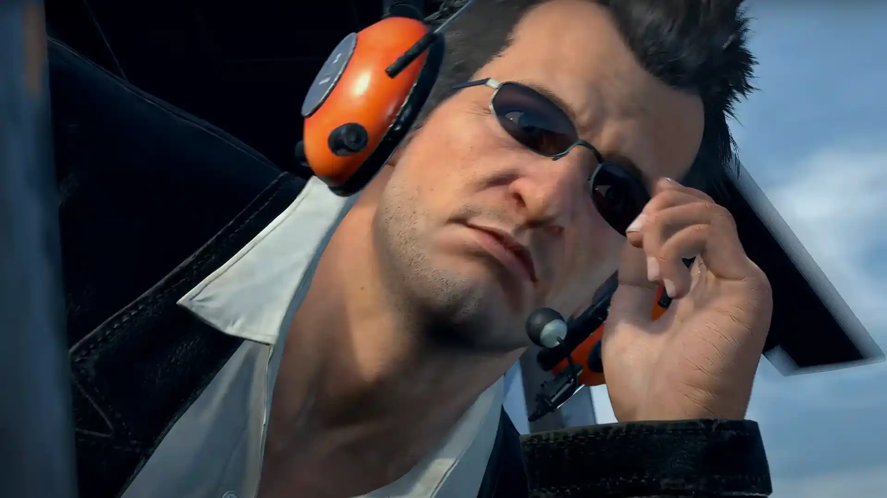
Frank West llega a Willamette con su cámara y su instinto periodístico, convencido de que está ante un caso importante. Apenas aterriza en la ciudad descubre que algo va mal incluso antes de entrar al centro comercial. Hay tropas militares, civiles desesperados y señales de violencia extrema. En muy poco tiempo queda aislado del mundo exterior junto a cientos de personas atrapadas dentro del Willamette Parkview Mall.
Cuando finalmente entra al centro comercial, el caos ya se ha desatado por completo. Zombis recorren los pasillos, algunos supervivientes se esconden como pueden y las comunicaciones con el exterior están casi rotas. Frank entiende rápidamente que si quiere salir con vida, tendrá que moverse con inteligencia, buscar recursos y descubrir qué está ocurriendo realmente.
La historia funciona desde ese momento como una cuenta regresiva. Frank no tiene todo el tiempo del mundo: tiene varias horas para investigar, rescatar supervivientes, reunir pruebas y entender quién está detrás del brote antes de que el lugar se convierta en una trampa sin salida.
El centro comercial como escenario de horror
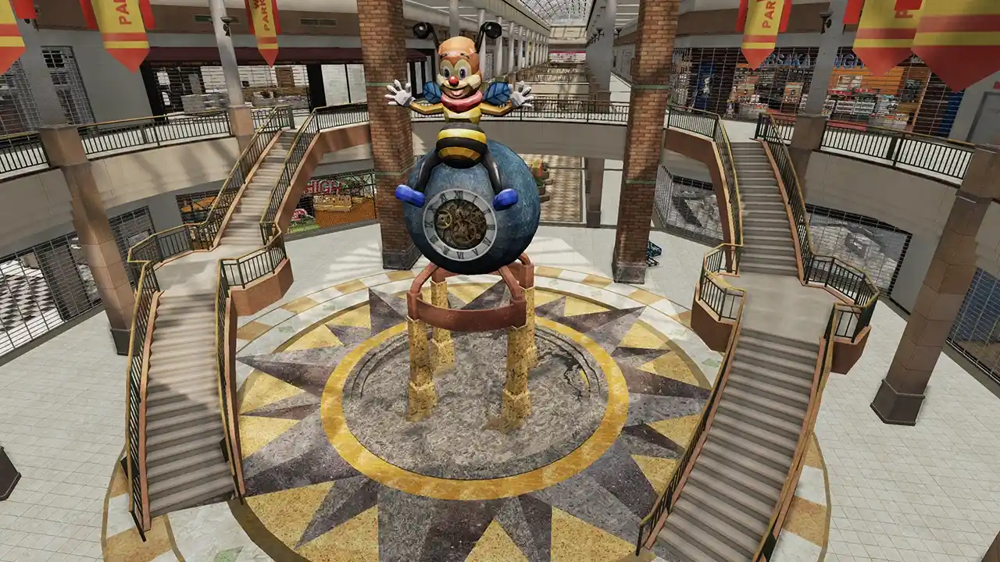
El mall de Willamette es uno de los escenarios más importantes de toda la saga porque redefine el concepto de brote zombi. No se trata de calles vacías ni de edificios abandonados, sino de un espacio lleno de vitrinas, música, anuncios, comida y consumo masivo transformado en un infierno de cadáveres ambulantes.
A lo largo de la historia Frank recorre distintas zonas del centro comercial mientras intenta sobrevivir a la infección. Cada espacio tiene su propio tono: las tiendas de ropa, la zona de comida, los almacenes, las oficinas, el estacionamiento y las áreas de mantenimiento aportan variedad y muestran que el desastre alcanzó cada rincón.
Ese contraste entre la vida cotidiana del shopping y la violencia absoluta del brote es lo que hace que Dead Rising tenga tanta identidad. El juego no solo pone zombis en un lugar cerrado; convierte el consumo moderno en una tumba gigante.
Los supervivientes
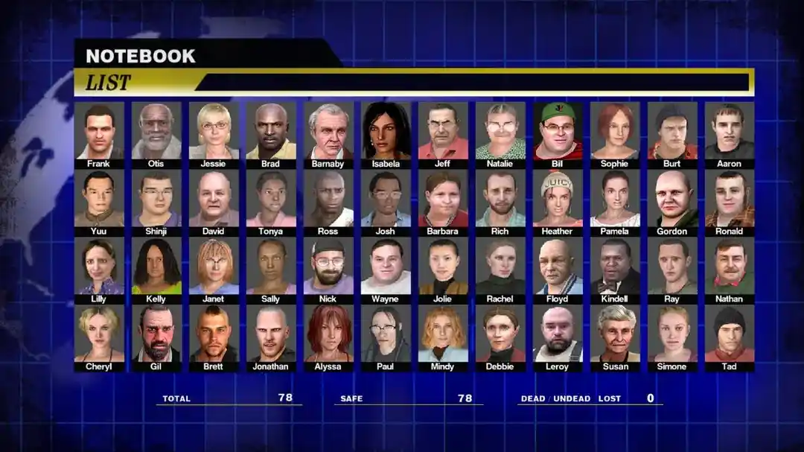
A medida que avanza la historia, Frank encuentra múltiples supervivientes atrapados dentro del mall. Algunas personas están aterradas y solo quieren escapar; otras están heridas; algunas intentan mantener el orden; y unas pocas parecen actuar de manera demasiado extraña como para confiar en ellas por completo.
Rescatar a los supervivientes es una parte fundamental de la experiencia y también ayuda a ampliar la historia. Cada persona aporta una pequeña ventana al colapso de Willamette. Hay familias separadas, civiles desesperados, empleados confundidos y gente que simplemente quedó atrapada en el peor momento posible.
Esta parte de la historia refuerza uno de los temas más importantes del juego: el brote no solo destruye cuerpos, también rompe la organización social, la confianza y la sensación de seguridad. En Dead Rising nadie está realmente a salvo.
Otis y la base de operaciones
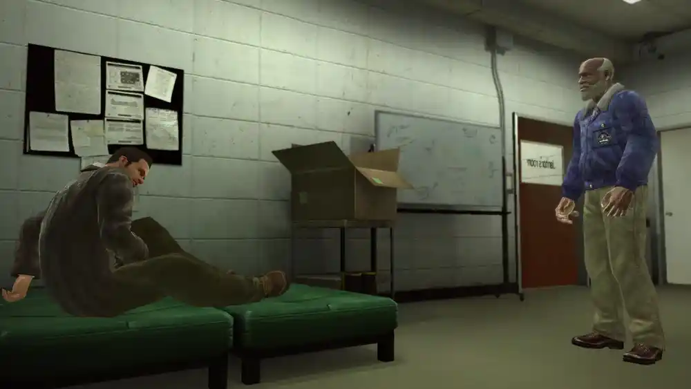
Uno de los personajes más recordados del primer juego es Otis, el encargado de seguridad del centro comercial. Aunque al principio parece solo un operador que da instrucciones, termina convirtiéndose en una pieza importante de apoyo para Frank. A través de él el protagonista recibe información, ubicaciones y actualizaciones sobre situaciones de emergencia dentro del mall.
Otis funciona como el contraste perfecto con el caos total del brote. Mientras el centro comercial se desmorona, él intenta mantener algo parecido a un sistema organizado de comunicación. Su presencia ayuda a que Frank no esté completamente solo y también le da al jugador una guía dentro del desorden.
Narrativamente, Otis representa la última chispa de orden en un lugar ya condenado.
Brad, Jessie y el puesto de seguridad
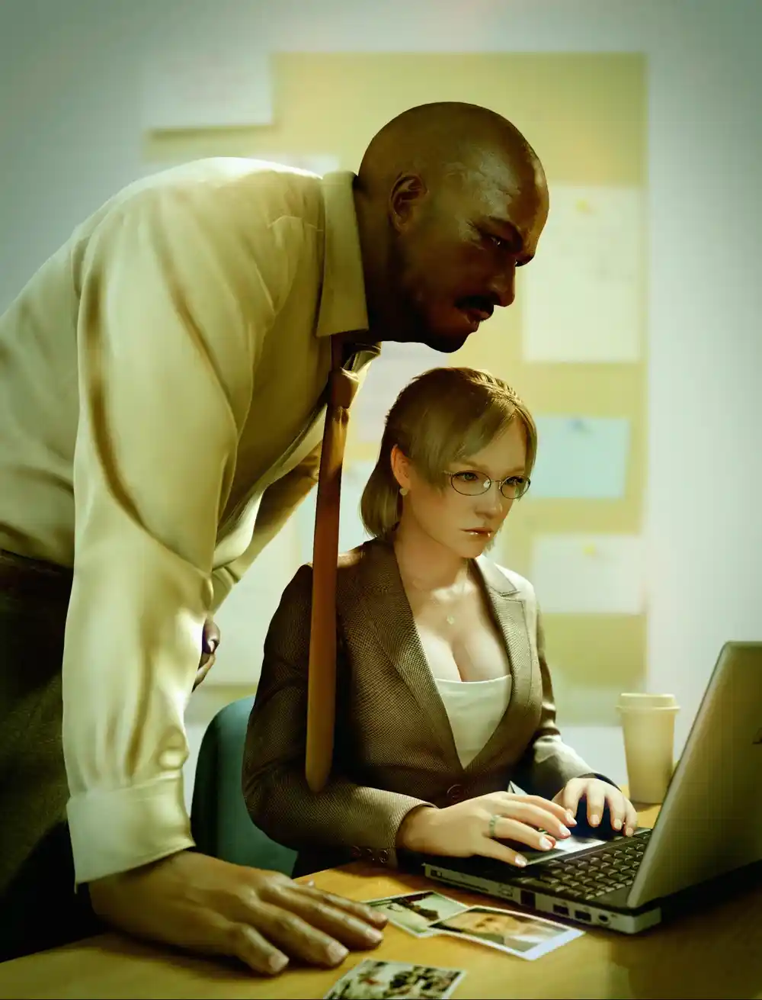
Frank también entra en contacto con Brad y Jessie, dos figuras importantes que operan desde el puesto de seguridad. Ambos ayudan a coordinar parte del movimiento dentro del centro comercial y a entender mejor la situación del brote.
A través de ellos la historia va tomando forma. El desastre no fue completamente aleatorio. Hay fuerzas militares involucradas, un cerco en la ciudad y señales de que el gobierno está intentando contener algo que ya escapó de control. Esa información hace que el juego pase de ser solo una historia de supervivencia a una investigación sobre un encubrimiento mucho más grande.
La verdad detrás del brote
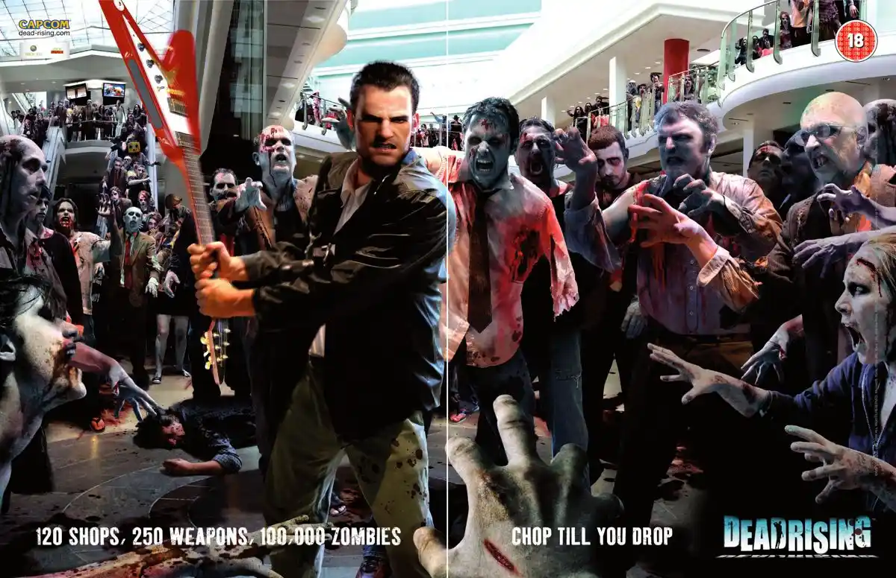
A medida que Frank sigue investigando, descubre que los zombis no aparecieron por casualidad. El brote está vinculado a una operación humana que involucró experimentos biológicos, manipulación de información y una cadena de decisiones irresponsables que provocaron el desastre.
La historia empieza a conectar a los infectados con el mundo militar y con una operación mucho más oscura de lo que parecía al principio. Frank entiende que su cámara no solo puede capturar imágenes de un desastre, sino también pruebas de una conspiración que estaba siendo escondida a toda costa.
Eso convierte al protagonista en algo más que un simple sobreviviente. Frank termina siendo testigo, investigador y pieza clave para exponer lo ocurrido.
El encubrimiento militar
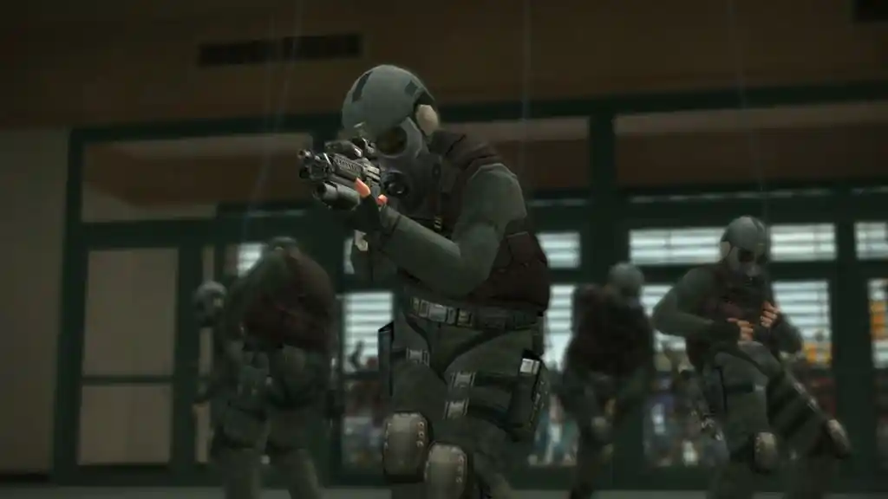
Una parte esencial de la historia del primer juego es la intervención del ejército. La ciudad no está simplemente abandonada: está siendo cercada y controlada para evitar que la verdad salga a la luz. El gobierno intenta contener el brote, pero también evitar que la información se filtre.
Eso añade tensión a la trama porque Frank no solo lucha contra zombis, sino también contra el tiempo, las barreras militares y una operación que quiere borrar cualquier evidencia del desastre.
En este punto, el juego deja de ser una simple historia de supervivencia y se convierte en una denuncia directa del encubrimiento, la negligencia y la forma en que las instituciones pueden fallar cuando más se las necesita.
El enfrentamiento con Carlito

Uno de los personajes más importantes detrás del brote es Carlito, cuya motivación está profundamente ligada a la venganza, el dolor y el resentimiento. Él es una figura clave para entender por qué Willamette terminó convertida en un infierno zombi.
Carlito no actúa como un villano plano. Su historia tiene raíces personales y emocionales que explican en parte sus decisiones. Sin embargo, eso no reduce la magnitud del desastre que provocó. Sus acciones terminan desencadenando una tragedia que afecta a cientos de inocentes.
Frank termina enfrentándose a él y descubriendo que el brote está íntimamente ligado a un conflicto humano mucho más complejo que una simple infección desatada por accidente.
La huida imposible
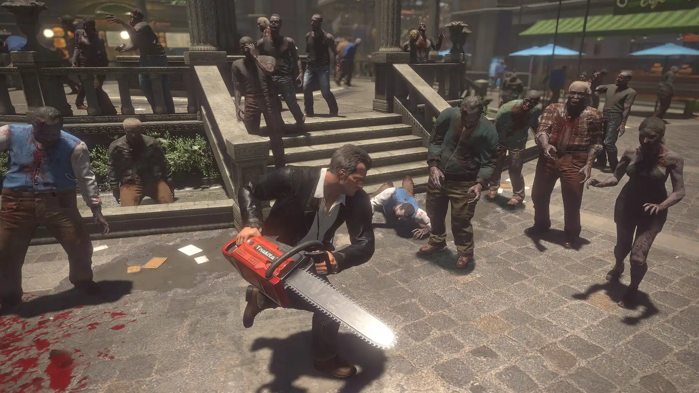
Con el paso de las horas, la situación en Willamette empeora. Los supervivientes disminuyen, los zombis se multiplican y las posibilidades de escapar se vuelven cada vez más escasas. Frank intenta ayudar a tantas personas como puede mientras avanza hacia la verdad.
Cada misión y cada evento del juego refuerzan la sensación de urgencia. El mall ya no es un lugar para explorar; es una trampa viva que se derrumba alrededor de todos los que siguen allí dentro.
La historia mantiene ese ritmo intenso hasta el final, donde Frank descubre por completo la magnitud del desastre y consigue salir con vida, aunque con la certeza de que la pesadilla no terminó realmente.
El final de Dead Rising

Al final, Frank logra sobrevivir y dejar atrás Willamette, pero el brote deja una marca enorme sobre él y sobre todo lo que investigó. Su historia no termina con una victoria limpia, sino con la sensación de que ha visto algo mucho más grande y peligroso de lo que el mundo está dispuesto a admitir.
El cierre del primer juego funciona como el punto de partida de toda la saga. Frank se convierte en una figura central del universo Dead Rising, y la investigación que comenzó en Willamette abre el camino para los brotes y conspiraciones que seguirán después.
Dead Rising 1 deja claro desde el principio que esta saga no solo va de matar zombis. Va de descubrir la verdad detrás de cada brote, mostrar el caos humano y exponer cómo una ciudad entera puede convertirse en una tumba cuando la situación se sale de control.
Dead Rising 2: Case Zero
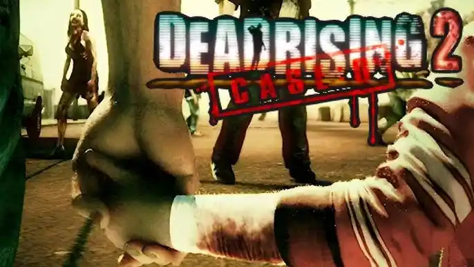
Tres años después de los acontecimientos de Willamette, el mundo ha cambiado por completo. La verdad sobre los zombis ya no puede ocultarse y los brotes se han convertido en una amenaza conocida por toda la sociedad. Aunque las autoridades intentan controlar la situación, la infección sigue apareciendo en distintos lugares y las empresas comienzan a aprovecharse de la tragedia.
En este nuevo escenario aparece Chuck Greene, un antiguo campeón de motocross que lucha por proteger a su hija Katey. Durante un brote anterior, la niña fue mordida por un zombi. A diferencia de otras víctimas, Katey no se transforma gracias a una medicina llamada Zombrex, un costoso tratamiento que retrasa temporalmente la infección. Desde entonces, Chuck vive únicamente para conseguir dosis de Zombrex y mantener con vida a su hija.
La historia de Case Zero comienza cuando Chuck y Katey viajan hacia Fortune City, una enorme ciudad de entretenimiento donde se celebran espectáculos relacionados con zombis. Chuck espera encontrar allí una oportunidad para ganar dinero y conseguir el medicamento que su hija necesita desesperadamente.
Sin embargo, antes de llegar a su destino, el vehículo de Chuck se avería cerca de la pequeña localidad de Still Creek. Lo que parecía un simple contratiempo pronto se convierte en una nueva pesadilla. La infección ha alcanzado el pueblo y los zombis comienzan a aparecer por todas partes.
Atrapado sin posibilidad de escapar, Chuck debe buscar combustible, piezas mecánicas y suministros para reparar su motocicleta mientras protege a Katey de las hordas que invaden las calles. Durante su estancia en Still Creek descubre supervivientes aterrados, personas desesperadas por abandonar la zona y numerosos ejemplos de cómo la sociedad se ha acostumbrado a convivir con la amenaza zombi.
A diferencia de Frank West, que investigaba la verdad detrás del brote de Willamette, Chuck tiene una motivación mucho más personal. Su objetivo no es exponer conspiraciones ni conseguir una gran exclusiva periodística. Lo único que le importa es mantener con vida a Katey y encontrar una forma de seguir adelante en un mundo cada vez más peligroso.
Mientras explora Still Creek, Chuck demuestra una gran capacidad para improvisar armas y utilizar cualquier objeto a su alcance para sobrevivir. Esta habilidad se convertirá en una de sus características más importantes durante los eventos posteriores de la saga.
Finalmente, tras superar numerosos obstáculos y conseguir los recursos necesarios, Chuck logra reparar su vehículo. Junto a Katey abandona Still Creek y continúa su viaje hacia Fortune City, sin saber que está a punto de verse envuelto en uno de los mayores brotes zombis de la historia reciente.
Case Zero sirve como introducción directa a Dead Rising 2. Presenta a Chuck Greene, muestra la dependencia de Katey al Zombrex y explica cómo ambos terminan llegando a Fortune City poco antes de que ocurra la siguiente gran catástrofe.
Dead Rising 2 – Historia completa
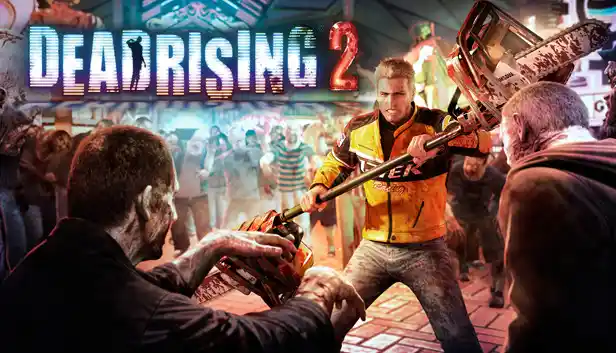
Después de los acontecimientos de Willamette, el mundo de Dead Rising ya no es el mismo. La existencia de los zombis dejó de ser un rumor y pasó a formar parte de la realidad pública. Las grandes empresas, el gobierno y los medios de comunicación encontraron nuevas formas de aprovechar el miedo colectivo, y en ese contexto aparece Dead Rising 2, una historia mucho más amplia y más cruel que la del primer juego.
La trama sigue a Chuck Greene, un antiguo corredor de motocross que carga con una responsabilidad desesperante: proteger a su hija Katey. La niña fue mordida por un zombi en el pasado, y para evitar que se transforme necesita Zombrex de forma constante. Chuck vive completamente dominado por esa urgencia. Su vida gira alrededor de conseguir el medicamento, mantener a su hija con vida y sobrevivir en un mundo donde cada brote puede borrar todo en cuestión de horas.
A diferencia de Frank West, que llegó a Willamette buscando una historia, Chuck entra en esta saga desde un lugar mucho más íntimo. No está persiguiendo la verdad por curiosidad profesional, sino intentando sostener a la única persona que realmente le importa. Esa motivación hace que la historia de Dead Rising 2 tenga una carga emocional mucho más fuerte.
Fortune City y el negocio del horror
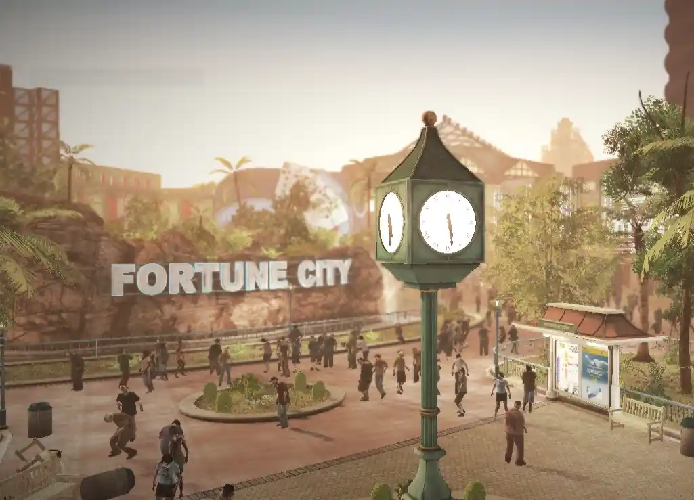
La historia se desarrolla principalmente en Fortune City, una enorme ciudad de entretenimiento construida alrededor de casinos, hoteles, centros comerciales y espectáculos televisivos. En apariencia, Fortune City representa el exceso, la diversión y el consumo; en la práctica, también funciona como el escenario perfecto para una tragedia cuando el brote zombi se libera en medio de miles de personas.
Antes de que la ciudad colapse por completo, Chuck participa en Terror Is Reality, un show televisivo que utiliza zombis como parte de su entretenimiento. El programa muestra hasta qué punto la sociedad se acostumbró al horror. Los muertos vivientes ya no son solo una amenaza; también se convirtieron en un negocio, una forma de espectáculo y una herramienta para ganar dinero.
Este detalle es fundamental porque marca el tono general del juego. Dead Rising 2 no solo habla de supervivencia, sino también de una civilización que monetizó el apocalipsis. Las empresas hicieron del miedo un producto, y Fortune City es la máxima expresión de esa decadencia.
Case Zero como prólogo de Chuck Greene
Antes de llegar a Fortune City, Chuck y Katey pasan por Still Creek, un pequeño pueblo donde comienza a sentirse el peso real de la crisis. Esa parte de la historia funciona como prólogo y sirve para entender mejor el carácter de Chuck. No es un héroe tradicional ni un periodista en busca de la verdad. Es un padre agotado que hace todo lo posible para mantener a su hija con vida.
La importancia de esta etapa está en que deja claro el nivel de desesperación del protagonista. Chuck ya no vive con calma ni con margen de error. Cada minuto cuenta, cada dosis de Zombrex importa y cualquier retraso puede convertirse en una condena para Katey. Esa tensión lo acompaña durante toda la historia principal.
Still Creek también introduce la idea de que el brote no es algo aislado. La infección ya se expandió lo suficiente como para alcanzar zonas pequeñas y alejadas, mostrando que el problema está creciendo más allá de los grandes centros urbanos.
El brote en Fortune City
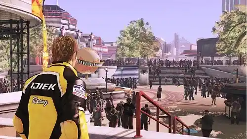
Cuando Chuck llega al punto central de la historia, Fortune City se convierte en una trampa mortal. Lo que iba a ser una ciudad dedicada al ocio termina completamente invadida por zombis. Casinos, pasillos, hoteles, estaciones internas y grandes espacios de entretenimiento quedan rápidamente arrasados por la infección.
La magnitud del brote es mucho mayor que en el primer juego. Si Willamette era un centro comercial aislado, Fortune City es una ciudad entera llena de luces, cámaras, publicidad y gente atrapada en medio del desastre. El contraste entre el espectáculo y la masacre hace que el caos se sienta todavía más brutal.
Chuck no solo tiene que sobrevivir, sino también moverse por distintos sectores de la ciudad mientras busca pruebas, rescata supervivientes y consigue Zombrex. El ritmo del juego mezcla urgencia personal con exploración de escenarios enormes.
Katey Greene y la lucha por el Zombrex
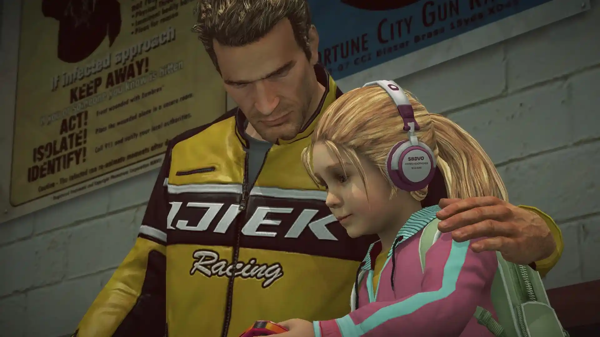
Katey es el corazón emocional de toda la historia de Dead Rising 2. Su condición obliga a Chuck a moverse constantemente y convierte cada decisión en algo vital. No hay margen para relajarse ni para perder el rumbo: si no consigue el medicamento, la infección avanzará.
Esa situación hace que el juego tenga un peso dramático muy particular. Chuck no solo está tratando de salir vivo de Fortune City, sino de proteger a su hija de un destino mucho peor que la muerte inmediata. Katey es la razón por la que él sigue avanzando cuando todo alrededor se desmorona.
Además, la relación entre ambos muestra una faceta muy humana del protagonista. Chuck no lucha por fama ni por gloria. Lucha por su hija. Esa diferencia lo vuelve uno de los personajes más recordados de la saga.
La conspiración detrás del brote
A medida que avanza la historia, Chuck descubre que el brote no fue una simple falla de seguridad. Detrás del caos hay una conspiración mucho más grande, organizada por empresas farmacéuticas y figuras poderosas interesadas en controlar el mercado del Zombrex.
La existencia del Zombrex cambió el mundo. Ya no es solo una medicina; es una herramienta de poder. Quien controla su distribución controla también el miedo de millones de personas. Esa idea convierte el brote en una oportunidad de negocio para quienes están dispuestos a manipular la tragedia.
Phenotrans aparece como una de las corporaciones más importantes dentro de esta red de intereses. La empresa se beneficia enormemente del pánico social y del hecho de que la infección se haya normalizado como una amenaza constante.
De esta forma, Dead Rising 2 deja claro que el verdadero monstruo no siempre es el zombi, sino también la estructura humana que convierte el desastre en dinero.
Rebecca Chang y la investigación periodística
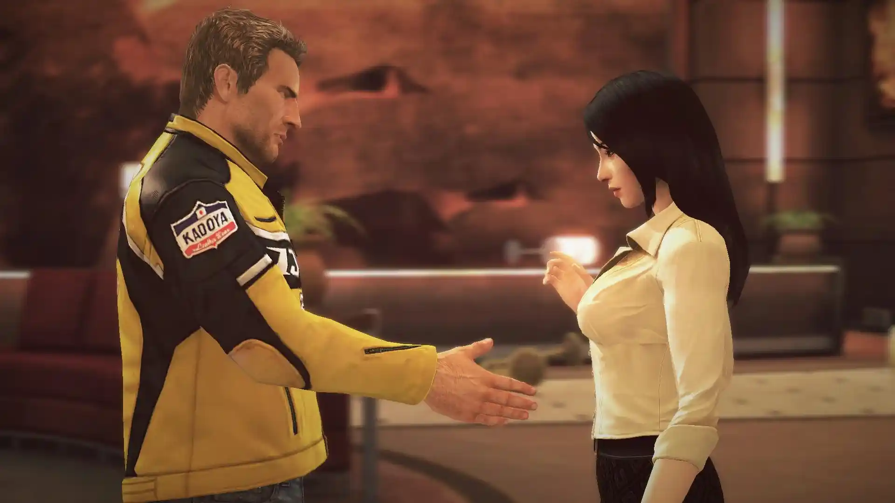
Rebecca Chang es una periodista que investiga lo que ocurre en Fortune City. Al principio no confía completamente en Chuck, pero con el tiempo entiende que él no es el culpable del brote y que hay algo mucho más grande detrás de la masacre.
Su papel es importante porque amplía la perspectiva de la historia. Rebecca no solo observa el desastre, sino que intenta documentarlo y exponer la verdad. Su presencia conecta con el espíritu del primer Dead Rising, donde Frank West también estaba motivado por la búsqueda de información.
Rebecca sirve como puente entre la investigación y la acción, y su participación le da más textura a la trama política y mediática del juego.
Stacy Forsythe y el grupo CURE
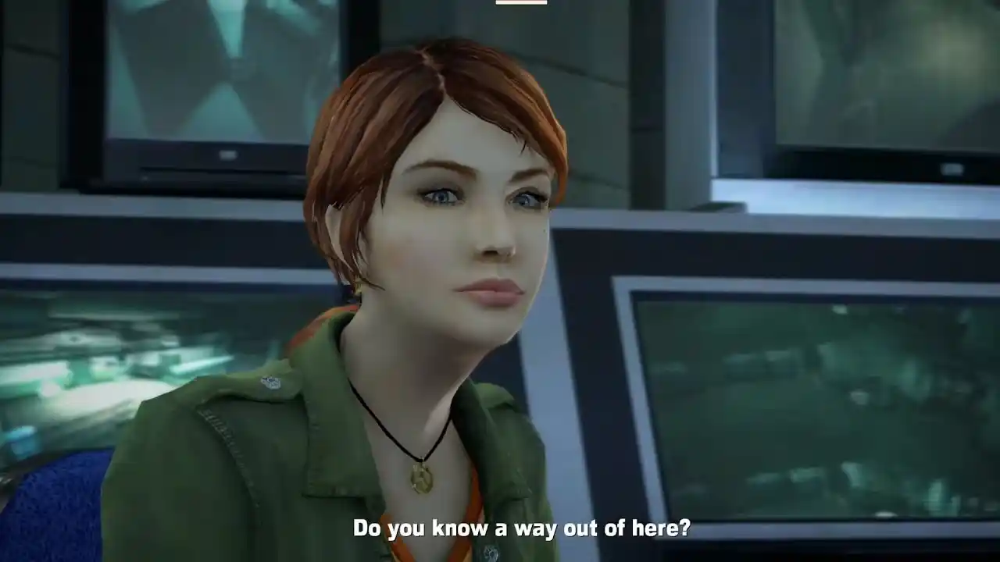
Stacy Forsythe lidera parte de la organización CURE, un grupo que intenta defender los derechos de los infectados y oponerse al uso abusivo del Zombrex. Su presencia le da al juego una dimensión más social, porque no todo el conflicto gira alrededor del combate o la supervivencia inmediata.
CURE muestra cómo la sociedad comenzó a dividirse frente a la infección. Algunas personas quieren controlar el brote con fuerza militar, otras intentan comprender a los infectados y otras simplemente buscan sacar ventaja económica del desastre.
Stacy representa una postura más humanitaria dentro de un mundo que cada vez se vuelve más despiadado.
TK y el espectáculo del desastre
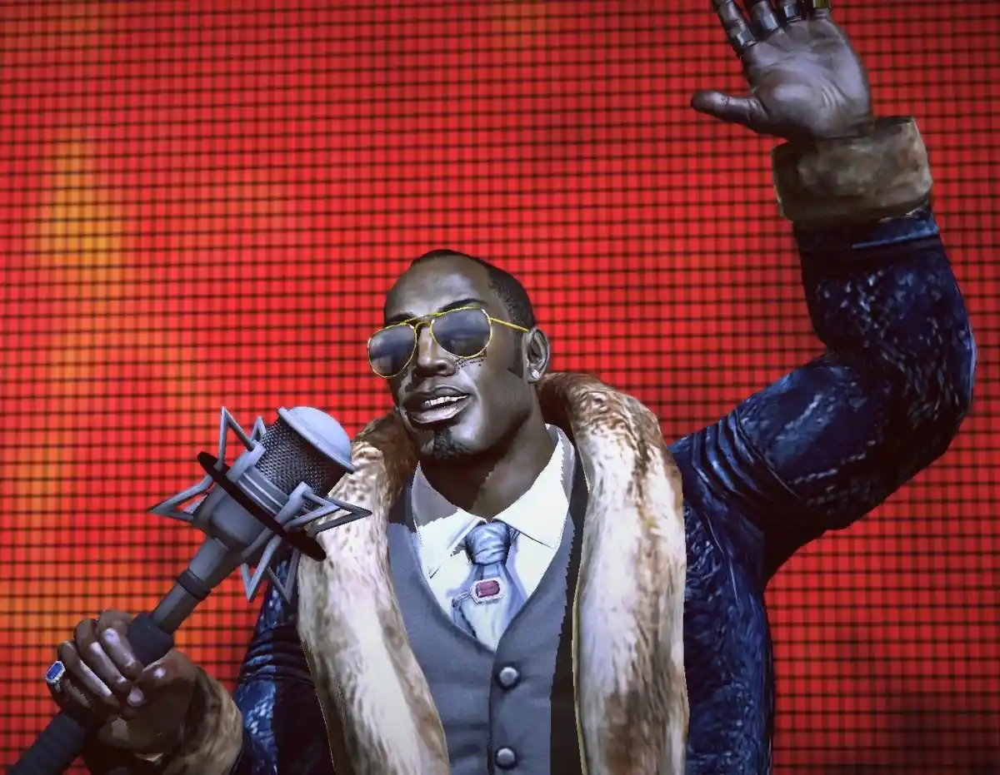
TK es uno de los personajes más desagradables y a la vez más recordados de Dead Rising 2. Como figura vinculada a Terror Is Reality, encarna la forma en que el entretenimiento convirtió el apocalipsis en negocio. Su carisma superficial oculta una ambición enorme y una disposición total a aprovecharse de la tragedia.
A medida que la historia avanza, TK se revela como una pieza importante dentro de la conspiración general. Su rol no es solo el de un presentador corrupto, sino el de alguien que entiende perfectamente cómo manipular el miedo colectivo para beneficio propio.
TK funciona muy bien dentro de la saga porque concentra el tono satírico de Dead Rising: un personaje que convierte la crisis en show, sin importar el costo humano.
El día a día dentro de la ciudad colapsada
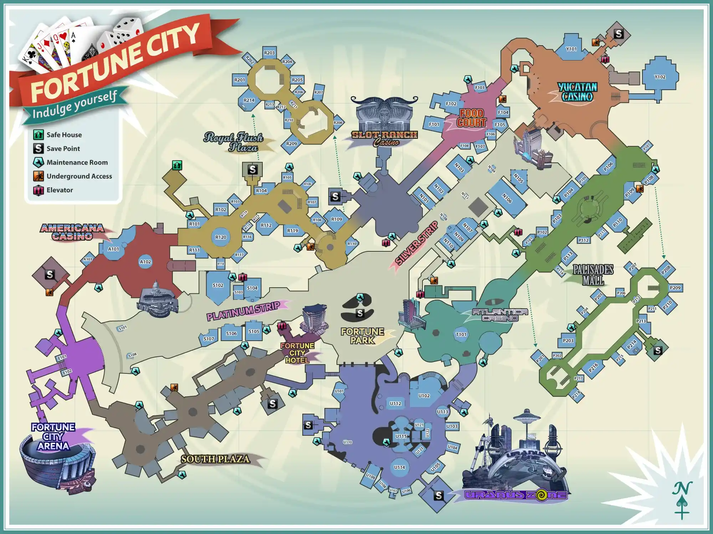
Uno de los aspectos más fuertes de Dead Rising 2 es cómo muestra el derrumbe cotidiano de una ciudad todavía llena de tecnología, lujo y comunicación. Mientras Chuck avanza, todo lo que antes parecía normal se transforma en una ruina funcional: pantallas apagadas, barricadas, tiendas vacías, zonas infestadas y supervivientes escondidos por todas partes.
Cada parte de Fortune City transmite una sensación distinta de colapso. Hay sectores donde todavía quedan rastros del espectáculo, otros donde domina el terror absoluto y otros donde la lucha humana por sobrevivir ya parece perdida.
Esa variedad da mucha fuerza visual y narrativa al juego, porque nunca deja de mostrar que el desastre se extiende en múltiples capas al mismo tiempo.
El descubrimiento de la verdad
Con el paso de la historia, Chuck logra juntar suficiente información como para entender que el brote fue deliberadamente manipulado. Lo que comenzó como un evento caótico termina revelando una red de intereses corporativos, mediáticos y farmacéuticos dispuestos a sacrificar vidas a cambio de control y dinero.
La conspiración detrás del brote demuestra que Dead Rising no se limita a la acción absurda contra zombis. También critica la corrupción de las instituciones, la explotación del miedo y la facilidad con la que una tragedia masiva puede convertirse en un negocio.
Chuck se convierte así en algo más que un superviviente. Es alguien que, aunque no busca la fama, termina expuesto al centro de una conspiración que quiere destruirlo para mantener ocultos sus secretos.
El conflicto final

En la parte final del juego, Chuck enfrenta directamente a los responsables de la tragedia mientras la ciudad se hunde en el caos definitivo. El brote ya no puede contenerse y la prioridad absoluta sigue siendo Katey, que debe recibir Zombrex para continuar con vida.
La conclusión del juego resuelve parte del misterio pero deja abiertas varias consecuencias. Chuck sobrevive, limpia en parte su nombre y evita que la conspiración termine de aplastarlo, pero la sensación final sigue siendo que el mundo de Dead Rising está muy lejos de recuperarse.
Fortune City queda marcada como otro gran símbolo del fracaso social frente al brote zombi y como el lugar donde la codicia volvió a demostrar que puede ser tan destructiva como la infección misma.
Final y transición hacia Case West

El final de Dead Rising 2 deja a Chuck vivo y preparado para seguir buscando respuestas. Aunque la historia principal se cierra, aún quedan cabos sueltos sobre Phenotrans, las conexiones del brote y las personas que operaron detrás de escena.
Ese cierre conduce directamente a Case West, donde Chuck se une a Frank West para seguir investigando la conspiración y terminar de descubrir hasta dónde llega realmente la red de corrupción que originó estos brotes.
Por eso Dead Rising 2 no debe verse como una historia aislada, sino como el centro de una etapa completa de la saga. Es el capítulo donde Chuck Greene se vuelve protagonista absoluto y donde la franquicia empieza a expandir aún más el conflicto entre supervivencia, negocio y encubrimiento.
Dead Rising 2: Case West
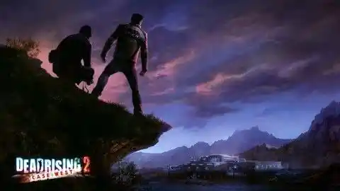
Tras sobrevivir a los acontecimientos de Fortune City, Chuck Greene finalmente consigue demostrar que no fue el responsable del brote. Sin embargo, aunque parte de la conspiración ha sido expuesta, todavía quedan muchas preguntas sin responder. Las pruebas reunidas durante Dead Rising 2 apuntan hacia Phenotrans, la poderosa corporación farmacéutica responsable de la producción y distribución de Zombrex.
Chuck comprende que los verdaderos responsables siguen libres y que gran parte de la verdad permanece oculta. Antes de poder reunirse definitivamente con Katey y dejar atrás aquella pesadilla, decide seguir investigando para descubrir quién estuvo realmente detrás de los brotes que han destruido miles de vidas.
Mientras tanto, Frank West continúa su propia búsqueda de respuestas. Desde los sucesos ocurridos en Willamette años atrás, Frank nunca dejó de investigar las conspiraciones relacionadas con los zombis. Aunque se convirtió en una celebridad gracias a su cobertura del brote original, también desarrolló una obsesión por descubrir quién estaba manipulando los acontecimientos desde las sombras.
Los caminos de ambos protagonistas finalmente se cruzan cuando reciben información sobre unas instalaciones secretas pertenecientes a Phenotrans. Allí podrían encontrarse pruebas definitivas capaces de exponer a la corporación ante el mundo entero.
El encuentro entre Frank West y Chuck Greene
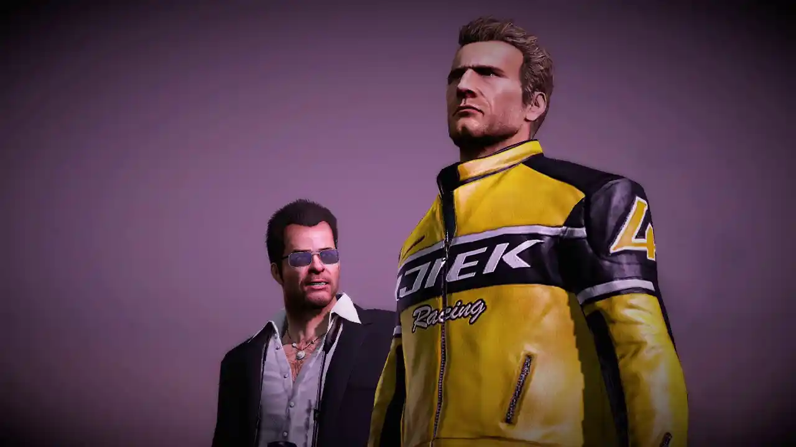
Uno de los momentos más importantes de toda la saga ocurre al comienzo de Case West. Frank West y Chuck Greene finalmente se conocen en persona. Ambos sobrevivieron a brotes masivos, ambos fueron acusados injustamente en distintos momentos y ambos descubrieron partes de una conspiración mucho mayor.
A pesar de sus diferencias de personalidad, rápidamente entienden que tienen el mismo objetivo. Frank aporta años de experiencia investigando los orígenes de la infección, mientras que Chuck posee información reciente obtenida durante la crisis de Fortune City.
Su alianza se convierte en el centro de toda la historia. Por primera vez, dos protagonistas principales trabajan juntos para descubrir la verdad completa detrás de los brotes zombis.
Además de la acción, el DLC ofrece numerosos diálogos donde ambos personajes comparan experiencias y comparten información sobre los acontecimientos vividos en Willamette y Fortune City.
La infiltración en las instalaciones de Phenotrans
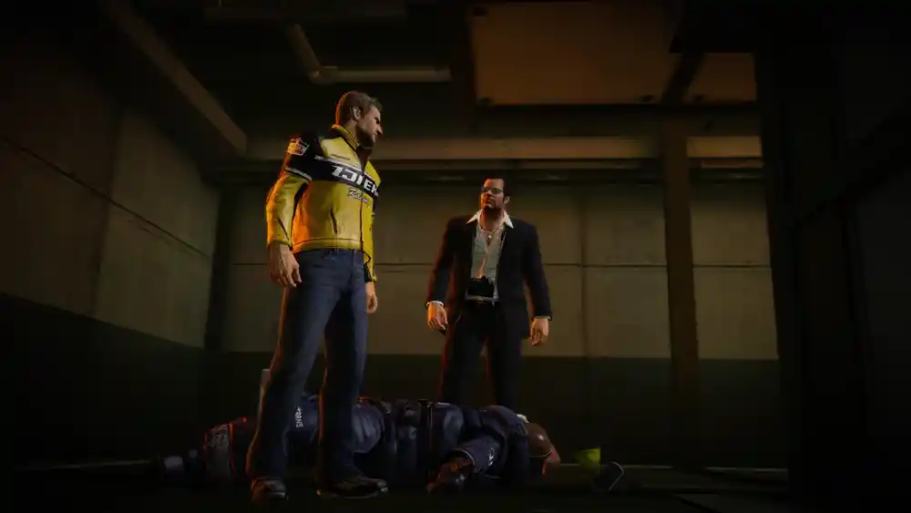
La investigación lleva a Frank y Chuck hasta un enorme complejo industrial perteneciente a Phenotrans. Lo que parecía una simple instalación farmacéutica termina revelándose como un lugar lleno de secretos oscuros.
A medida que avanzan por el complejo, descubren laboratorios ocultos, zonas de pruebas, áreas de almacenamiento y evidencia que conecta directamente a la empresa con múltiples incidentes relacionados con la infección zombi.
Los protagonistas encuentran documentos, grabaciones y datos internos que sugieren que la corporación sabía mucho más sobre la infección de lo que había admitido públicamente.
Cada nueva prueba fortalece la teoría de que Phenotrans no solo estaba aprovechando la crisis, sino que además participó activamente en operaciones destinadas a manipular la expansión del virus para aumentar la dependencia mundial del Zombrex.
Los experimentos secretos

Durante su recorrido por las instalaciones, Frank y Chuck descubren numerosos experimentos ilegales relacionados con los zombis. Muchos de ellos involucran investigaciones destinadas a comprender mejor el proceso de infección y controlar su desarrollo.
Los laboratorios muestran hasta qué punto la corporación estaba dispuesta a cruzar límites éticos para obtener beneficios económicos. Personas infectadas fueron utilizadas como sujetos de prueba y numerosos experimentos terminaron provocando consecuencias desastrosas.
La situación se vuelve cada vez más peligrosa cuando algunas de estas investigaciones salen de control. Los protagonistas deben enfrentarse a nuevas amenazas creadas por los propios experimentos de Phenotrans.
Estos descubrimientos confirman que la compañía llevaba años ocultando información crítica al público y que muchos de los brotes podrían haberse evitado si la verdad hubiera sido revelada antes.
La evidencia definitiva

A medida que profundizan en la instalación, Frank y Chuck logran recopilar una enorme cantidad de pruebas. La evidencia conecta directamente a altos cargos de Phenotrans con operaciones ilegales relacionadas con la infección y la distribución de Zombrex.
Lo más importante es que consiguen demostrar que la corporación conocía detalles fundamentales sobre la crisis zombi y ocultó deliberadamente esa información para proteger sus intereses económicos.
La investigación también revela cómo distintas personas dentro de la empresa participaron en encubrimientos destinados a mantener el monopolio sobre el medicamento que millones de personas necesitaban para sobrevivir.
Para Frank, este hallazgo representa la culminación de años de investigación. Para Chuck, significa obtener justicia después de haber sido acusado injustamente por los acontecimientos de Fortune City.
El enfrentamiento final

Con las pruebas reunidas, Frank y Chuck deben abrirse paso entre hordas de zombis y sistemas de seguridad para escapar de las instalaciones. Los responsables intentan destruir la evidencia antes de que pueda salir a la luz.
La misión se convierte en una carrera contrarreloj. Ambos protagonistas luchan para sobrevivir mientras protegen la información capaz de derribar a Phenotrans.
Tras numerosos enfrentamientos, finalmente consiguen abandonar el complejo con las pruebas necesarias para exponer públicamente las actividades de la corporación.
Aunque no todos los responsables reciben un castigo inmediato, el daño para la empresa es enorme. Por primera vez, gran parte de la verdad queda al alcance del público.
Consecuencias para la saga

Case West funciona como el verdadero cierre de la historia iniciada en Dead Rising 2. La alianza entre Frank West y Chuck Greene permite revelar información que permanecía oculta desde los primeros brotes zombis.
El DLC también fortalece la conexión entre las distintas entregas de la saga. Frank vuelve a ocupar un papel central dentro de la narrativa, mientras que Chuck completa su arco argumental relacionado con Fortune City y la búsqueda de justicia.
La caída de parte de la conspiración no significa el final de la amenaza. La infección sigue existiendo, nuevos brotes continúan apareciendo y el mundo permanece profundamente marcado por años de crisis.
Los acontecimientos de Case West preparan el terreno para el futuro de la franquicia y sirven como puente narrativo hacia los sucesos que años después conducirán a Dead Rising 3.
Dead Rising 3 – Historia completa
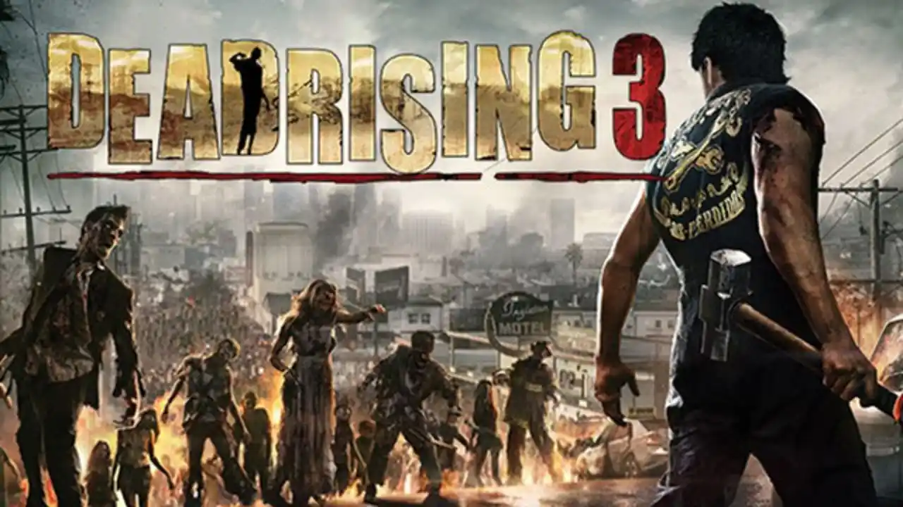
Diez años después de los acontecimientos de Fortune City, el mundo ha cambiado drásticamente. Los brotes zombis ya no son incidentes aislados. La humanidad ha aprendido a convivir con la amenaza, y los gobiernos han desarrollado protocolos especiales para contener futuras epidemias.
Sin embargo, a pesar de todos los avances tecnológicos y científicos, la infección continúa siendo un problema global. Millones de personas dependen del Zombrex para sobrevivir y las cicatrices de los antiguos brotes siguen presentes en la sociedad.
La historia de Dead Rising 3 se desarrolla en Los Perdidos, una gigantesca ciudad ubicada en California. Lo que comienza como un nuevo brote aparentemente controlable termina convirtiéndose en una catástrofe de proporciones nunca vistas.
En medio del caos aparece Nick Ramos, un joven mecánico cuya vida cambiará para siempre cuando descubra que posee una conexión única con los secretos más importantes de la infección.
Nick Ramos y el comienzo del desastre
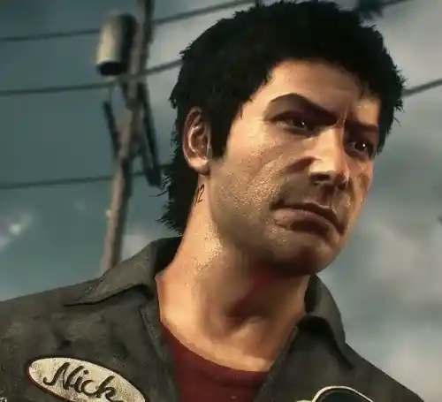
Nick Ramos trabaja como mecánico en Los Perdidos. A diferencia de Frank West o Chuck Greene, Nick no tiene experiencia enfrentándose a brotes zombis ni participando en investigaciones sobre conspiraciones.
Cuando la infección comienza a expandirse por la ciudad, Nick se encuentra atrapado junto a sus amigos Dick, Annie y Rhonda. Lo que inicialmente parece otro brote más pronto se transforma en una auténtica guerra por la supervivencia.
La ciudad colapsa en cuestión de horas. Las calles quedan abarrotadas de zombis, los servicios de emergencia desaparecen y el ejército pierde rápidamente el control de la situación.
Mientras intenta escapar, Nick descubre algo sorprendente: posee una resistencia especial relacionada con la infección. Esta particularidad lo convierte en una persona extremadamente valiosa para quienes conocen la verdad detrás del virus.
La caída de Los Perdidos
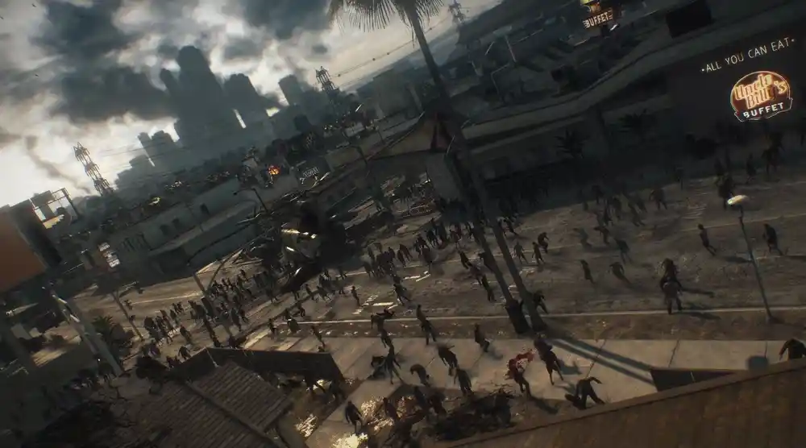
Los Perdidos representa uno de los mayores desastres de toda la saga. La magnitud del brote supera cualquier incidente anterior y deja a millones de personas atrapadas en una ciudad completamente infestada.
A diferencia de Willamette o Fortune City, aquí no existe un único edificio o zona principal. Toda la ciudad se convierte en un enorme campo de batalla donde los supervivientes luchan por comida, refugio y recursos.
Las carreteras colapsan, los sistemas de transporte dejan de funcionar y los barrios enteros son consumidos por la infección. Cada distrito presenta nuevos peligros, grupos hostiles y miles de muertos vivientes.
Nick debe atravesar este entorno devastado mientras intenta comprender por qué tantas personas parecen interesadas en capturarlo.
La conexión de Nick con el origen del brote
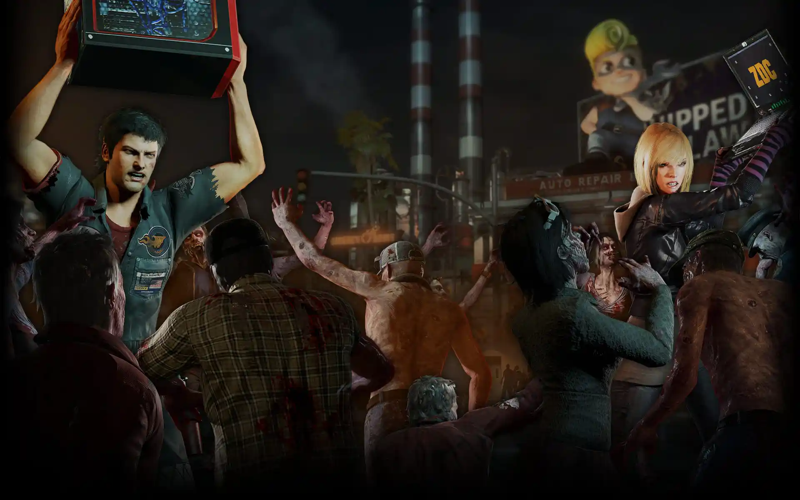
Con el paso de la historia, Nick descubre que su resistencia a la infección no es una simple coincidencia. Su pasado está vinculado directamente con algunos de los experimentos más secretos realizados durante décadas.
Existen individuos especiales que nacieron durante los primeros incidentes zombis y que poseen características únicas relacionadas con el virus. Nick es uno de ellos.
Su organismo responde de forma diferente a la infección, lo que lo convierte en una pieza fundamental para comprender el futuro de la humanidad.
Esta revelación transforma por completo el conflicto principal. Ya no se trata únicamente de escapar de la ciudad, sino de impedir que personas peligrosas utilicen a Nick para sus propios planes.
Los supervivientes y nuevos aliados
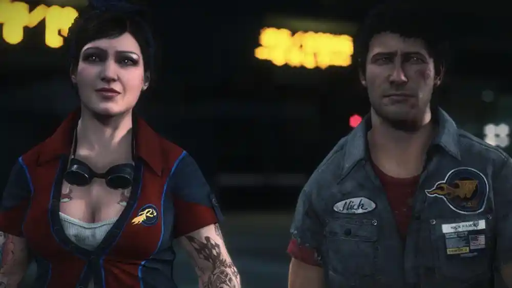
Durante su viaje, Nick conoce numerosos supervivientes que intentan mantenerse con vida en medio del desastre. Algunos buscan escapar de la ciudad, otros desean encontrar familiares desaparecidos y varios intentan descubrir quién provocó realmente el brote.
Entre sus aliados más importantes se encuentran Annie, Rhonda y otros personajes que lo ayudan a desplazarse por Los Perdidos y comprender la verdadera naturaleza de la conspiración.
Cada uno aporta información valiosa y ayuda a construir una visión más amplia del desastre que consume la ciudad.
La cooperación entre supervivientes se convierte en uno de los elementos centrales de la historia, especialmente cuando el tiempo comienza a agotarse.
Los Hemmings y la conspiración
A medida que Nick profundiza en la investigación, descubre que existe una organización extremadamente poderosa detrás de los acontecimientos actuales.
La familia Hemmings posee conexiones políticas, económicas y científicas que les permitieron influir durante años en los acontecimientos relacionados con la infección.
Sus miembros creen que el brote representa una oportunidad para remodelar el mundo y obtener un poder sin precedentes.
Las acciones de esta organización terminan desempeñando un papel fundamental en la expansión de la crisis y en los planes que involucran directamente a Nick.
Los Siete Pecados Capitales
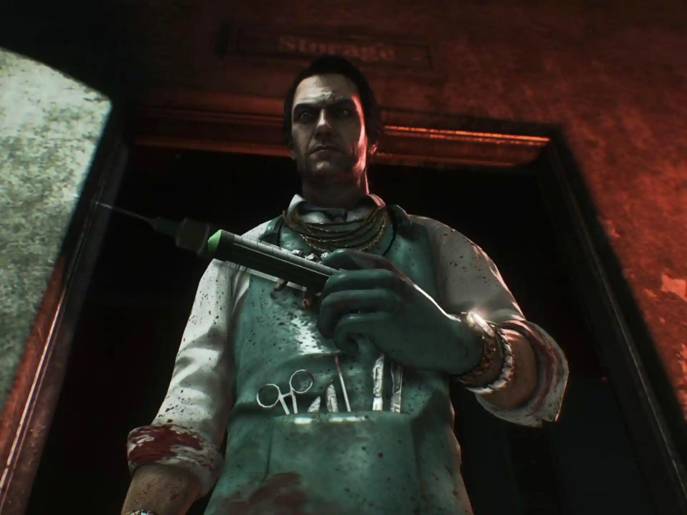
Uno de los aspectos más recordados de Dead Rising 3 son los llamados Siete Pecados Capitales. Estos individuos representan versiones extremas de distintos defectos humanos llevados al límite durante el apocalipsis.
Cada uno controla una zona específica de Los Perdidos y posee una personalidad única marcada por la locura, la obsesión o la corrupción.
Nick debe enfrentarse a ellos durante su viaje, descubriendo cómo el desastre ha transformado a algunas personas en amenazas tan peligrosas como los propios zombis.
Estos encuentros refuerzan uno de los temas clásicos de la saga: cuando la sociedad colapsa, los seres humanos pueden convertirse en monstruos incluso peores que los muertos vivientes.
La cuenta regresiva militar
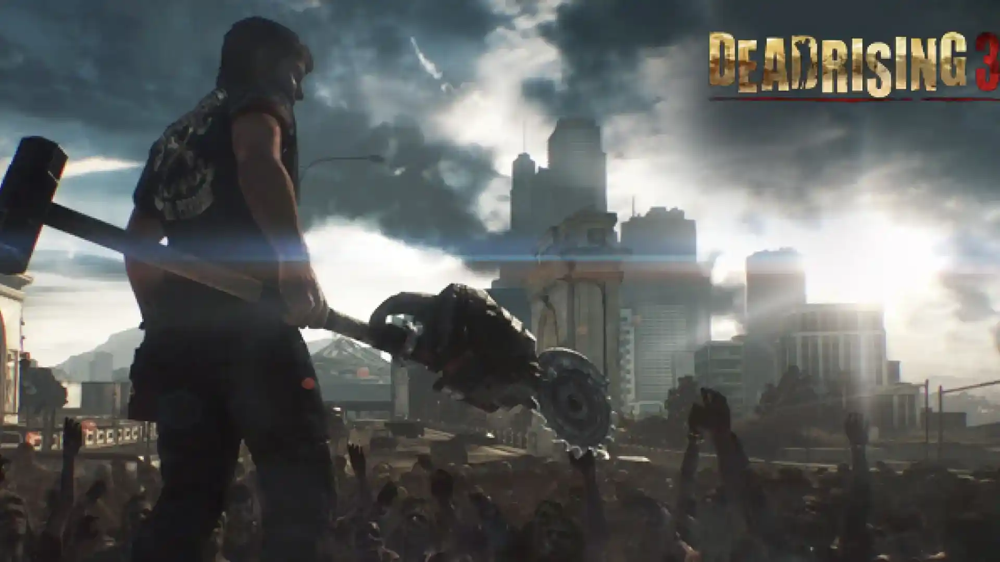
Mientras Nick intenta descubrir la verdad, el gobierno toma una decisión extrema. Las autoridades consideran que la ciudad está completamente perdida y establecen una fecha límite para destruir Los Perdidos mediante una operación militar masiva.
La noticia genera pánico entre los supervivientes. Millones de personas podrían morir si la evacuación no se completa antes de la fecha señalada.
Este límite temporal añade una enorme presión a toda la historia. Cada misión y cada descubrimiento deben realizarse antes de que el ejército elimine la ciudad por completo.
La amenaza del bombardeo se convierte en un enemigo invisible que acompaña constantemente al jugador durante la aventura.
El Proyecto Zombi
Las investigaciones finalmente revelan la existencia de programas secretos relacionados con la infección. Durante años, distintas organizaciones estudiaron el comportamiento del virus y buscaron formas de utilizarlo para alcanzar objetivos políticos y militares.
Nick descubre que muchas de las tragedias ocurridas desde Willamette hasta Los Perdidos están conectadas por una cadena de experimentos, encubrimientos y manipulaciones.
La infección ya no aparece como un simple accidente biológico. Detrás de ella existe una compleja red de intereses que busca controlar el futuro de la humanidad.
Estas revelaciones elevan enormemente la escala de la historia y convierten a Dead Rising 3 en uno de los capítulos más importantes de toda la franquicia.
El enfrentamiento final
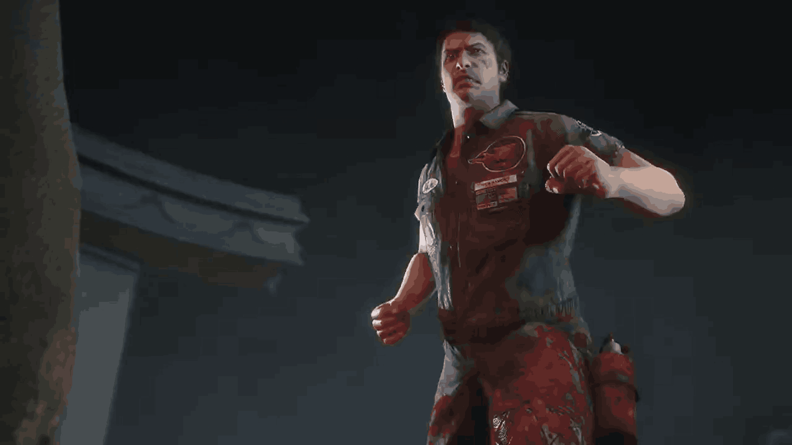
En la etapa final del juego, Nick debe enfrentarse a quienes intentan utilizarlo para completar sus planes. La ciudad se encuentra al borde de la destrucción y el tiempo disponible se reduce cada vez más.
Las decisiones tomadas durante la aventura determinan distintos desenlaces posibles, pero en todos los casos Nick termina enfrentando la verdad sobre su pasado y su papel dentro de la crisis.
Los combates finales ponen a prueba todo lo aprendido durante la historia y obligan al protagonista a decidir qué hacer con el conocimiento que ha descubierto.
La lucha definitiva representa el choque entre quienes desean controlar el futuro mediante la infección y quienes intentan impedir que los errores del pasado vuelvan a repetirse.
Consecuencias para la saga
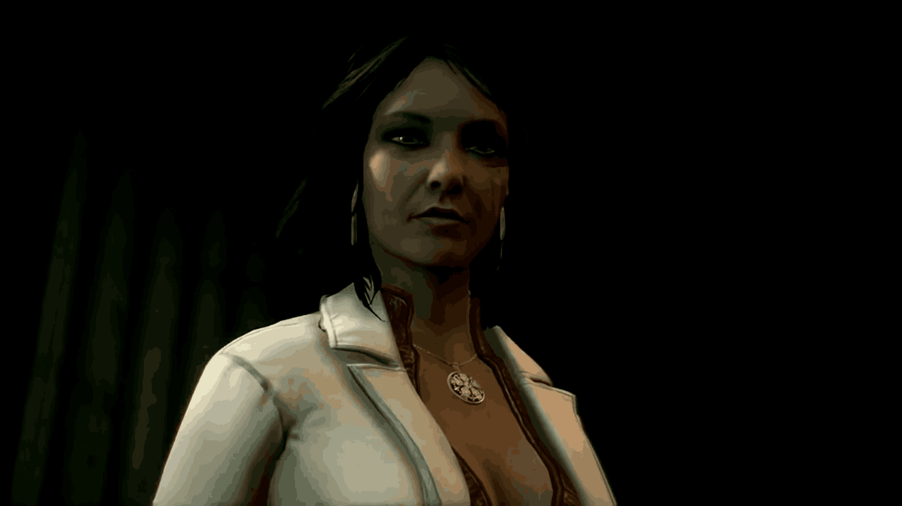
Dead Rising 3 amplía enormemente el universo de la franquicia. La historia conecta los acontecimientos de Willamette, Fortune City y Los Perdidos mientras revela detalles fundamentales sobre el origen de la infección y las conspiraciones que la rodean.
Nick Ramos se convierte en uno de los personajes más importantes de la saga y su papel resulta crucial para comprender el futuro del mundo de Dead Rising.
El juego también deja abiertas múltiples preguntas sobre la evolución de la infección, el destino de los supervivientes y las consecuencias de las decisiones tomadas durante la crisis.
Los acontecimientos de Los Perdidos preparan el camino para los DLC de Dead Rising 3 y, posteriormente, para la historia que años después continuaría en Dead Rising 4.
Dead Rising 3: Operation Broken Eagle
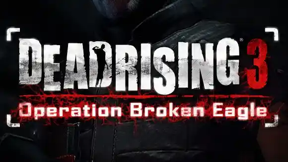
Operation Broken Eagle es el primero de los capítulos adicionales de Dead Rising 3 y presenta a un soldado de élite atrapado en medio del caos de Los Perdidos. A diferencia de Nick Ramos, este contenido muestra la crisis desde una perspectiva militar y más fría, enfocada en la misión, la disciplina y la obediencia a órdenes superiores.
La historia arranca con un objetivo claro: encontrar y rescatar a un personaje de alto valor estratégico en medio de la ciudad infestada. Sin embargo, a medida que avanza la misión, queda claro que el brote ha superado por completo cualquier plan de contención.
El protagonista del DLC se mueve entre calles destruidas, bases abandonadas y zonas completamente tomadas por zombis, mientras empieza a descubrir que las órdenes que recibió no son tan limpias como parecían. La operación se vuelve cada vez más peligrosa, y el conflicto deja de ser solo una cuestión militar para transformarse en una lucha contra una conspiración mucho mayor.
Dead Rising 3: Fallen Angel
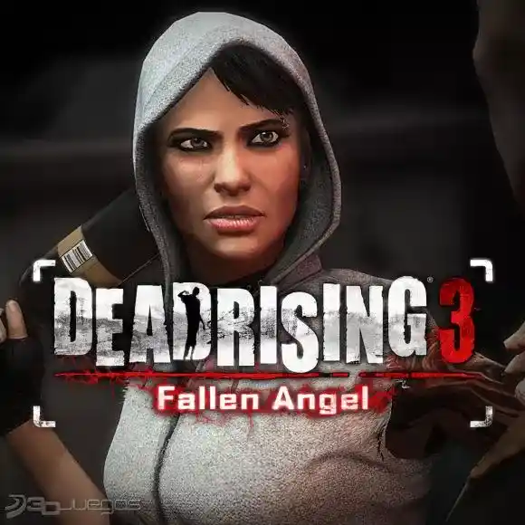
Fallen Angel sigue a Angel Quijano, una agente con un papel importante dentro del caos de Los Perdidos. Este capítulo muestra una historia más personal, donde la protagonista se mueve en medio del desastre mientras intenta entender qué ocurre realmente con la ciudad y con las personas que deberían estar protegiéndola.
A medida que atraviesa zonas infestadas, Angel descubre que hay intereses ocultos detrás del brote y que la ciudad no solo está cayendo por culpa de los zombis. La corrupción humana, las órdenes contradictorias y la manipulación de los supervivientes forman parte del verdadero peligro.
Este DLC ayuda a ampliar la visión de la crisis desde otro ángulo, mostrando cómo distintos personajes se ven obligados a tomar decisiones extremas para sobrevivir en una ciudad que ya perdió todo control.
Dead Rising 3: Chaos Rising
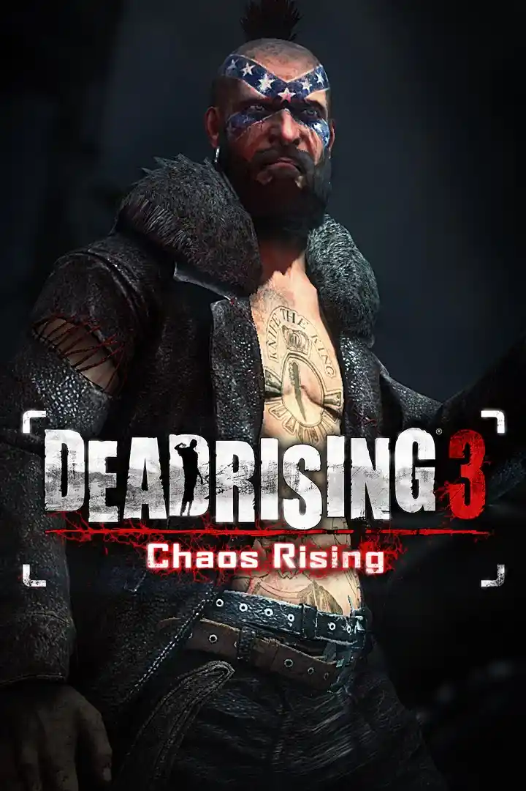
Chaos Rising continúa expandiendo el desastre dentro de Los Perdidos con una historia centrada en Hunter Thibodeaux, un hombre que queda atrapado en una situación cada vez más violenta y fuera de control. Este DLC muestra de forma muy clara cómo el brote convirtió la ciudad en un territorio donde la brutalidad humana y la infección zombi se mezclan constantemente.
Hunter se ve forzado a abrirse paso por sectores completamente arrasados, enfrentándose tanto a zombis como a personas desesperadas que aprovecharon el colapso para imponerse por la fuerza. La historia tiene un tono más agresivo y frenético, reforzando la sensación de que Los Perdidos se está desintegrando desde adentro.
A lo largo del recorrido, salen a la luz detalles que conectan el caos con las operaciones encubiertas que estaban moviendo los hilos detrás de escena. El DLC mantiene el estilo exagerado de Dead Rising, pero también profundiza en la violencia y la desesperación de quienes quedaron encerrados en la ciudad.
Dead Rising 3: The Last Agent
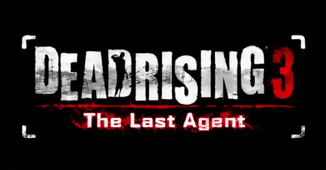
The Last Agent es el último capítulo de los contenidos de Dead Rising 3 y cierra la historia de Brad Park, un agente que intenta sobrevivir mientras sigue investigando los secretos detrás del brote. Este DLC es especialmente importante porque conecta directamente con la parte más seria de la conspiración y con la verdad que aún quedaba oculta dentro de Los Perdidos.
Brad no está ahí solo para escapar. Su objetivo es recopilar información, descubrir quién está realmente moviendo los hilos y exponer lo que ocurrió antes de que la ciudad sea borrada del mapa. Mientras avanza, se enfrenta a nuevas amenazas y a una situación cada vez más extrema, donde cada segundo cuenta.
Este capítulo funciona muy bien como cierre del paquete DLC porque deja una sensación de conclusión más fuerte, y además ayuda a unir el caos de la ciudad con la investigación sobre el verdadero origen y manejo del desastre.
Dead Rising 4 – Historia completa
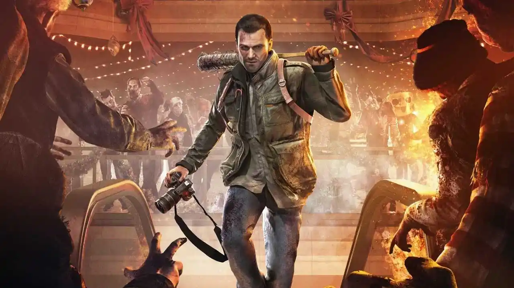
Años después de los acontecimientos de Los Perdidos, el mundo continúa conviviendo con la amenaza zombi. Aunque la humanidad ha desarrollado mejores métodos de contención y comprensión de la infección, los brotes siguen apareciendo en distintos lugares del planeta.
Frank West ha envejecido considerablemente desde los sucesos del primer Dead Rising. Su fama como periodista ya no es la misma y su carrera atraviesa uno de los peores momentos de su vida. Las investigaciones sobre zombis dejaron cicatrices profundas, y muchos consideran que sus mejores años quedaron atrás.
Sin embargo, todo cambia cuando una de sus antiguas estudiantes, Vick Chu, le presenta información relacionada con una nueva actividad sospechosa en Willamette. El lugar donde comenzó la pesadilla años atrás vuelve a convertirse en el centro de una posible conspiración.
Regreso a Willamette
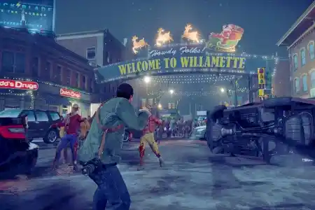
Frank decide regresar a Willamette para investigar los rumores. Lo que encuentra es una ciudad completamente distinta a la que conoció durante el primer brote. El gobierno y distintas corporaciones reconstruyeron gran parte de la zona, transformándola en una comunidad aparentemente normal.
Sin embargo, bajo la superficie siguen ocultándose numerosos secretos. Las investigaciones de Frank revelan rápidamente que algo extraño está ocurriendo en los alrededores de la ciudad.
Mientras recopila información junto a Vick Chu, ambos descubren señales de actividad relacionada con experimentos biológicos y nuevos tipos de zombis que no deberían existir.
El nuevo brote
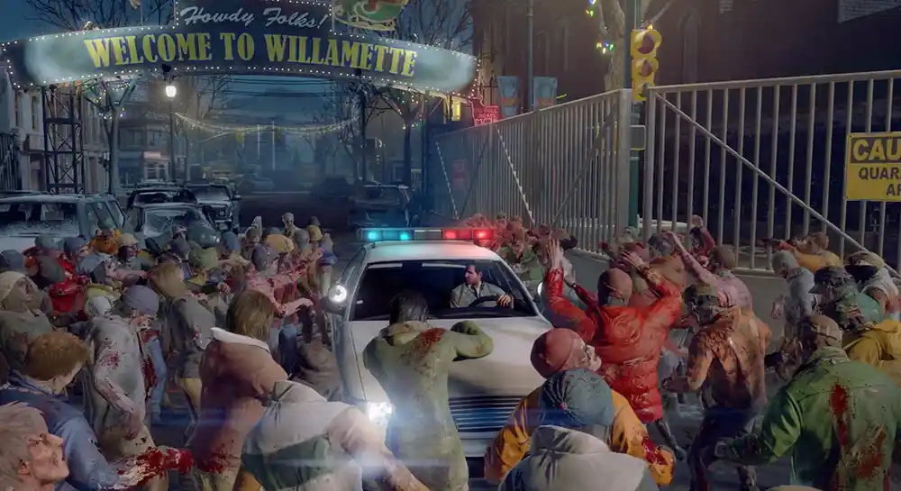
La situación se deteriora rápidamente cuando un nuevo brote zombi golpea Willamette. Miles de personas quedan atrapadas mientras la infección vuelve a expandirse por calles, centros comerciales y complejos urbanos.
Frank se encuentra nuevamente en el centro de una catástrofe similar a la que vivió años atrás. Sin embargo, esta vez el escenario es mucho más grande y las consecuencias potenciales son mucho más graves.
Las fuerzas de seguridad intentan controlar la situación, pero el brote crece demasiado rápido. La ciudad entra en cuarentena y los supervivientes deben improvisar refugios para mantenerse con vida.
A medida que el caos aumenta, Frank comprende que no está frente a una simple repetición de los acontecimientos del pasado. Algo nuevo está ocurriendo.
Los zombis evolucionados
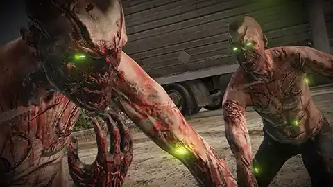
Uno de los descubrimientos más importantes de Dead Rising 4 es la aparición de nuevas variantes de zombis. Algunas criaturas muestran comportamientos más agresivos, capacidades físicas superiores y mutaciones que no habían sido vistas anteriormente.
Estas nuevas formas de infección representan un enorme peligro incluso para personas con experiencia enfrentándose a brotes anteriores.
Frank descubre que estas mutaciones están relacionadas con investigaciones realizadas durante años por organizaciones que continuaron experimentando con el virus después de los incidentes de Willamette, Fortune City y Los Perdidos.
La existencia de estos zombis evolucionados demuestra que la amenaza sigue cambiando y que la humanidad aún está lejos de comprender completamente la infección.
La investigación de Frank West
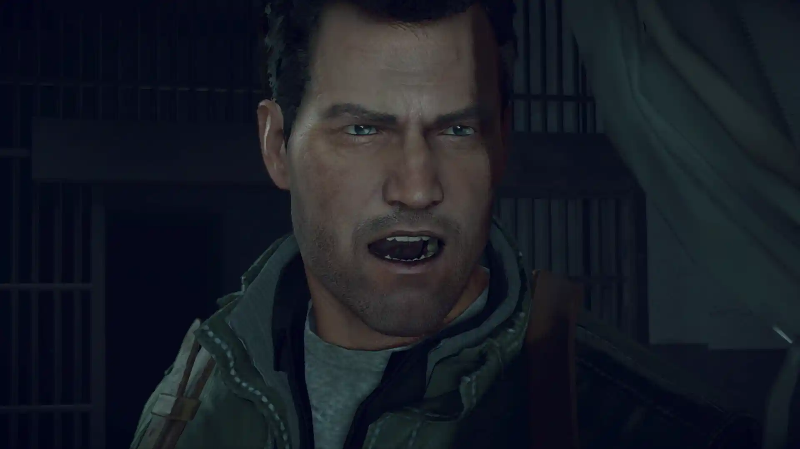
A lo largo de la historia, Frank utiliza su experiencia como periodista para seguir pistas, recopilar pruebas y descubrir quién está detrás de los acontecimientos actuales.
Su investigación lo lleva a enfrentarse con corporaciones, científicos y responsables de experimentos secretos relacionados con la infección.
A diferencia de los primeros juegos, donde Frank simplemente intentaba documentar un brote, ahora posee décadas de experiencia y comprende mucho mejor las consecuencias de lo que está investigando.
El regreso de Frank permite cerrar muchos temas relacionados con la saga original y reforzar su papel como uno de los personajes más importantes del universo Dead Rising.
La verdad detrás de los experimentos
Conforme avanza la investigación, Frank descubre que varias organizaciones continuaron desarrollando experimentos relacionados con el virus mucho después de los grandes brotes conocidos.
La obsesión por controlar la infección, utilizarla como arma o explotarla comercialmente sigue presente en numerosas instituciones.
Muchos de los errores que provocaron tragedias anteriores nunca fueron completamente corregidos. Por el contrario, algunos individuos continuaron utilizando el conocimiento obtenido durante décadas para seguir desarrollando proyectos peligrosos.
Estas revelaciones muestran que el verdadero conflicto de Dead Rising no gira únicamente alrededor de los zombis, sino también alrededor de la ambición humana.
Vick Chu y las tensiones con Frank
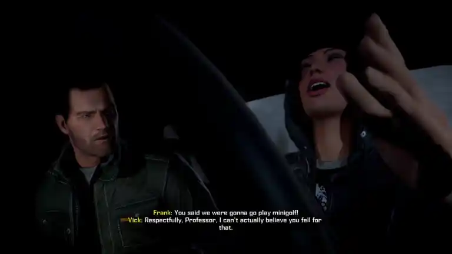
Vick Chu acompaña a Frank durante gran parte de la historia. Aunque ambos comparten el objetivo de descubrir la verdad, sus métodos y prioridades suelen entrar en conflicto.
Las diferencias entre ambos personajes generan tensiones constantes. Frank actúa basándose en la experiencia adquirida durante años enfrentándose a brotes, mientras que Vick busca resultados rápidos y reconocimiento profesional.
Esta relación aporta una dinámica diferente a la historia y refleja cómo distintas generaciones perciben los acontecimientos relacionados con la infección.
El enfrentamiento final
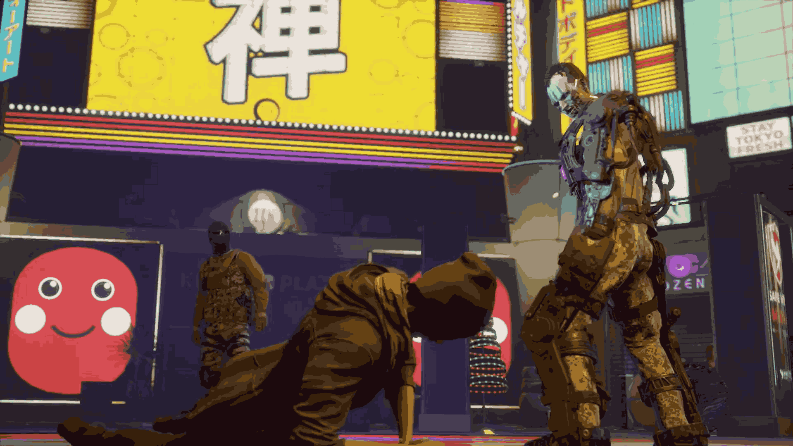
La investigación culmina con Frank enfrentándose a los responsables de los nuevos experimentos. El brote ha alcanzado un nivel crítico y el tiempo para detener la expansión de la infección se está agotando.
Mientras Willamette vuelve a convertirse en un campo de batalla, Frank debe utilizar toda su experiencia para sobrevivir y asegurar que la verdad salga finalmente a la luz.
Los acontecimientos finales mezclan acción, supervivencia y revelaciones sobre décadas de conspiraciones relacionadas con el virus.
El destino de numerosos supervivientes y el futuro de la ciudad dependen de que Frank consiga exponer a quienes provocaron la crisis.
Consecuencias para la saga
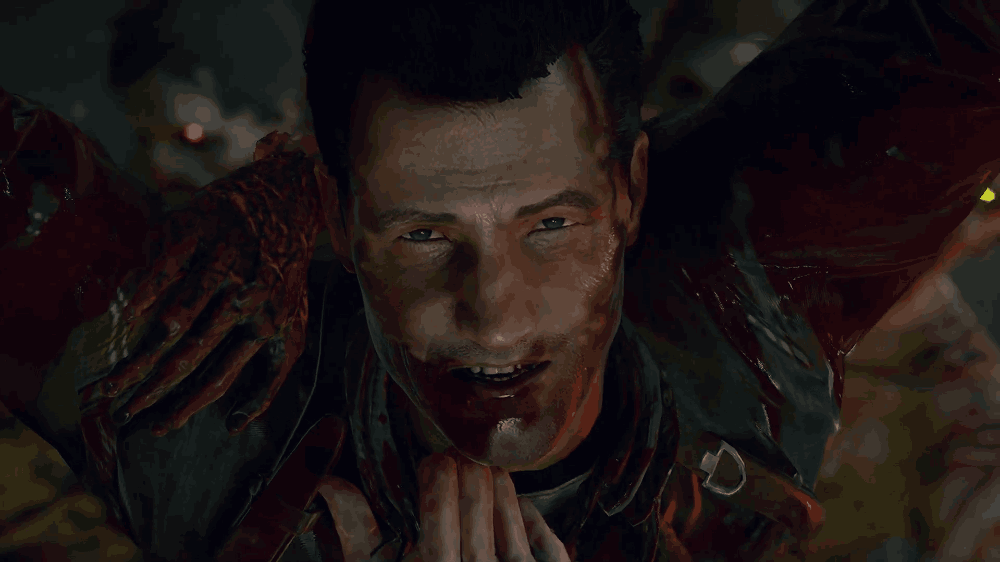
Dead Rising 4 funciona como el regreso de Frank West al centro de la franquicia y sirve como una especie de cierre para muchos elementos iniciados en el primer juego.
La historia vuelve al lugar donde comenzó la saga y muestra cómo décadas de experimentos, conspiraciones y brotes transformaron el mundo.
Aunque no responde absolutamente todas las preguntas del universo Dead Rising, sí ofrece una conclusión para varios de los temas más importantes desarrollados desde Willamette hasta Los Perdidos.
Con este capítulo termina la línea principal de la cronología de Dead Rising, una historia marcada por la supervivencia, la corrupción, las conspiraciones corporativas y la constante amenaza de los zombis.
Dead Rising 4: Frank Rising
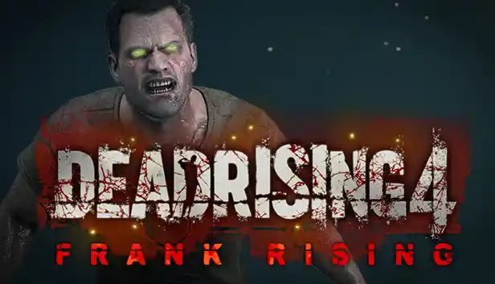
Frank Rising es la expansión que continúa directamente los acontecimientos de Dead Rising 4. Durante los eventos finales del juego principal, Frank West entra en contacto con una variante avanzada de la infección y termina siendo contaminado.
A diferencia de la mayoría de los supervivientes que se transforman rápidamente en zombis sin conservar ningún rasgo humano, Frank experimenta una mutación mucho más lenta y extraña. Su cuerpo comienza a cambiar progresivamente mientras lucha por mantener el control de su mente.
La expansión muestra una de las situaciones más desesperadas de toda la saga. Por primera vez, el propio protagonista se encuentra del lado de los infectados y debe convivir con una transformación que parece inevitable.
Mientras la infección avanza, Frank descubre que todavía existe una posibilidad de salvarse. Una posible cura experimental podría detener el proceso antes de que pierda completamente su humanidad.
El problema es que el tiempo corre en su contra. Cada minuto que pasa provoca nuevas mutaciones físicas, aumenta sus impulsos violentos y reduce sus posibilidades de recuperación.
A medida que avanza la historia, Frank obtiene habilidades propias de los infectados. Su fuerza aumenta considerablemente y desarrolla capacidades que ningún ser humano normal podría poseer. Sin embargo, cada mejora viene acompañada de una pérdida gradual de control sobre sí mismo.
La expansión explora el miedo que siempre estuvo presente en la saga: la posibilidad de convertirse en aquello contra lo que se ha luchado durante años. Frank ya no solo combate zombis; ahora debe enfrentarse a su propia transformación.
Durante su búsqueda de una cura atraviesa instalaciones destruidas, zonas contaminadas y áreas donde continúan los experimentos relacionados con la infección. Muchas de las respuestas que busca están conectadas con investigaciones realizadas después del brote principal de Willamette.
La situación empeora cuando distintos grupos intentan aprovechar su condición única. Algunos ven a Frank como una oportunidad para desarrollar nuevas investigaciones, mientras que otros consideran que representa una amenaza demasiado peligrosa para seguir con vida.
El desenlace de Frank Rising sirve como epílogo para la historia de Frank West dentro de la franquicia. La expansión profundiza en las consecuencias de los experimentos que alimentaron los brotes durante décadas y muestra hasta dónde puede llegar la infección cuando evoluciona más allá de los casos conocidos anteriormente.
Con Frank Rising concluye la línea temporal principal de Dead Rising, cerrando el recorrido iniciado en el centro comercial de Willamette años atrás y llevando a uno de los personajes más icónicos de la saga a enfrentar su desafío más personal y aterrador.
Juegos no canónicos y spin-offs de Dead Rising
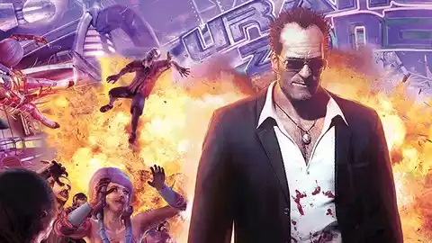
Además de la cronología principal, la franquicia Dead Rising recibió varios títulos alternativos, adaptaciones y versiones especiales que no forman parte de la historia oficial. Estos juegos reutilizan personajes, escenarios y elementos de la saga, pero presentan cambios importantes en los acontecimientos o fueron desarrollados como experiencias independientes.
Dead Rising: Chop Till You Drop (2009)
Versión exclusiva para Nintendo Wii basada en el primer Dead Rising. Debido a las limitaciones de la consola, gran parte del juego fue rediseñado utilizando elementos de Resident Evil 4. La historia sigue a Frank West en Willamette, pero presenta numerosos cambios en mecánicas, enemigos y desarrollo, por lo que no se considera parte del canon oficial.
Dead Rising 2: Off the Record (2011)
Se trata de una versión alternativa de Dead Rising 2 donde Frank West reemplaza a Chuck Greene como protagonista. La historia transcurre en Fortune City, pero los acontecimientos son completamente distintos a los del juego original. Capcom confirmó que esta línea temporal es una realidad alternativa y no forma parte de la cronología principal.
Dead Rising Mobile (2010)
Juego desarrollado para dispositivos móviles que adapta libremente los eventos del primer Dead Rising. Su historia simplifica gran parte de los acontecimientos de Willamette y fue diseñada principalmente para teléfonos de la época. No tiene relevancia dentro de la narrativa oficial.
Dead Rising Java
Otra adaptación para teléfonos móviles antiguos compatible con dispositivos Java. Presenta una versión muy reducida del primer juego, centrándose únicamente en la supervivencia de Frank West dentro del centro comercial. No es considerado canónico.
Dead Rising 3 Arcade
Versión arcade basada en Dead Rising 3 lanzada para centros recreativos japoneses. El juego adapta elementos de Los Perdidos y de los personajes principales, pero está orientado completamente a la acción y no aporta información nueva a la historia oficial de la saga.
Aunque estos títulos expandieron la presencia de la franquicia en distintas plataformas, ninguno afecta la cronología principal formada por Dead Rising, Case Zero, Dead Rising 2, Case West, Dead Rising 3, sus DLCs, Dead Rising 4 y Frank Rising.